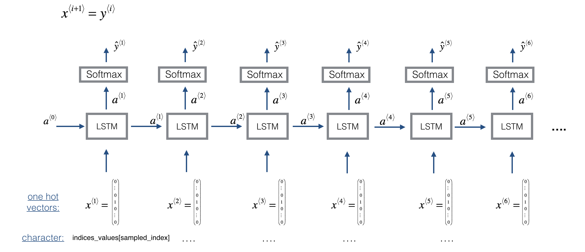
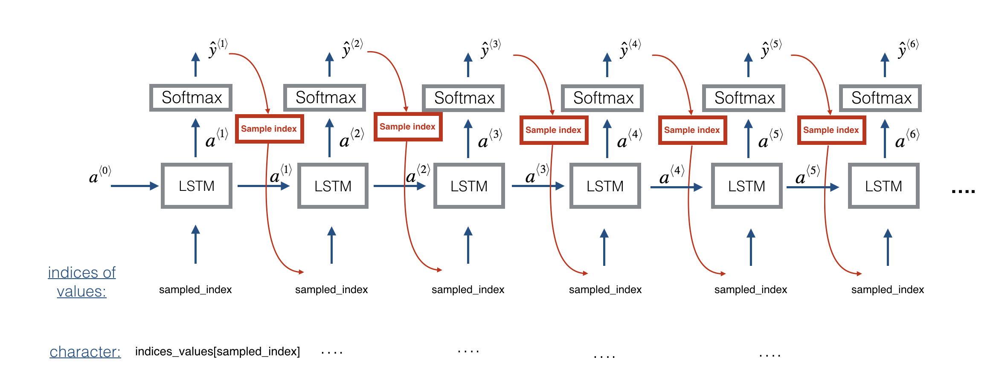

Improvise a Jazz Solo with an LSTM Network
Welcome to your final programming assignment of this week! In this notebook, you will implement a model that uses an LSTM to generate music. You will even be able to listen to your own music at the end of the assignment.
You will learn to:
- Apply an LSTM to music generation.
- Generate your own jazz music with deep learning.
Please run the following cell to load all the packages required in this assignment. This may take a few minutes.
1 | from __future__ import print_function |
1 - Problem statement
You would like to create a jazz music piece specially for a friend’s birthday. However, you don’t know any instruments or music composition. Fortunately, you know deep learning and will solve this problem using an LSTM netwok.
You will train a network to generate novel jazz solos in a style representative of a body of performed work.

1.1 - Dataset
You will train your algorithm on a corpus of Jazz music. Run the cell below to listen to a snippet of the audio from the training set:
1 | IPython.display.Audio('./data/30s_seq.mp3') |
We have taken care of the preprocessing of the musical data to render it in terms of musical “values.” You can informally think of each “value” as a note, which comprises a pitch and a duration. For example, if you press down a specific piano key for 0.5 seconds, then you have just played a note. In music theory, a “value” is actually more complicated than this—specifically, it also captures the information needed to play multiple notes at the same time. For example, when playing a music piece, you might press down two piano keys at the same time (playng multiple notes at the same time generates what’s called a “chord”). But we don’t need to worry about the details of music theory for this assignment. For the purpose of this assignment, all you need to know is that we will obtain a dataset of values, and will learn an RNN model to generate sequences of values.
Our music generation system will use 78 unique values. Run the following code to load the raw music data and preprocess it into values. This might take a few minutes.
1 | X, Y, n_values, indices_values = load_music_utils() |
shape of X: (60, 30, 78)
number of training examples: 60
Tx (length of sequence): 30
total # of unique values: 78
Shape of Y: (30, 60, 78)
You have just loaded the following:
X: This is an (m, $T_x$, 78) dimensional array. We have m training examples, each of which is a snippet of $T_x =30$ musical values. At each time step, the input is one of 78 different possible values, represented as a one-hot vector. Thus for example, X[i,t,:] is a one-hot vector representating the value of the i-th example at time t.Y: This is essentially the same asX, but shifted one step to the left (to the past). Similar to the dinosaurus assignment, we’re interested in the network using the previous values to predict the next value, so our sequence model will try to predict $y^{\langle t \rangle}$ given $x^{\langle 1\rangle}, \ldots, x^{\langle t \rangle}$. However, the data inYis reordered to be dimension $(T_y, m, 78)$, where $T_y = T_x$. This format makes it more convenient to feed to the LSTM later.n_values: The number of unique values in this dataset. This should be 78.indices_values: python dictionary mapping from 0-77 to musical values.
1.2 - Overview of our model
Here is the architecture of the model we will use. This is similar to the Dinosaurus model you had used in the previous notebook, except that in you will be implementing it in Keras. The architecture is as follows:

We will be training the model on random snippets of 30 values taken from a much longer piece of music. Thus, we won’t bother to set the first input $x^{\langle 1 \rangle} = \vec{0}$, which we had done previously to denote the start of a dinosaur name, since now most of these snippets of audio start somewhere in the middle of a piece of music. We are setting each of the snippts to have the same length $T_x = 30$ to make vectorization easier.
2 - Building the model
In this part you will build and train a model that will learn musical patterns. To do so, you will need to build a model that takes in X of shape $(m, T_x, 78)$ and Y of shape $(T_y, m, 78)$. We will use an LSTM with 64 dimensional hidden states. Lets set n_a = 64.
1 | n_a = 64 |
Here’s how you can create a Keras model with multiple inputs and outputs. If you’re building an RNN where even at test time entire input sequence $x^{\langle 1 \rangle}, x^{\langle 2 \rangle}, \ldots, x^{\langle T_x \rangle}$ were given in advance, for example if the inputs were words and the output was a label, then Keras has simple built-in functions to build the model. However, for sequence generation, at test time we don’t know all the values of $x^{\langle t\rangle}$ in advance; instead we generate them one at a time using $x^{\langle t\rangle} = y^{\langle t-1 \rangle}$. So the code will be a bit more complicated, and you’ll need to implement your own for-loop to iterate over the different time steps.
The function djmodel() will call the LSTM layer $T_x$ times using a for-loop, and it is important that all $T_x$ copies have the same weights. I.e., it should not re-initiaiize the weights every time—-the $T_x$ steps should have shared weights. The key steps for implementing layers with shareable weights in Keras are:
- Define the layer objects (we will use global variables for this).
- Call these objects when propagating the input.
We have defined the layers objects you need as global variables. Please run the next cell to create them. Please check the Keras documentation to make sure you understand what these layers are: Reshape(), LSTM(), Dense().
1 | reshapor = Reshape((1, 78)) # Used in Step 2.B of djmodel(), below |
Each of reshapor, LSTM_cell and densor are now layer objects, and you can use them to implement djmodel(). In order to propagate a Keras tensor object X through one of these layers, use layer_object(X) (or layer_object([X,Y]) if it requires multiple inputs.). For example, reshapor(X) will propagate X through the Reshape((1,78)) layer defined above.
Exercise: Implement djmodel(). You will need to carry out 2 steps:
- Create an empty list “outputs” to save the outputs of the LSTM Cell at every time step.
Loop for $t \in 1, \ldots, T_x$:
A. Select the “t”th time-step vector from X. The shape of this selection should be (78,). To do so, create a custom Lambda layer in Keras by using this line of code:
1
2
3
4
5
6
7
8
9x = Lambda(lambda x: X[:,t,:])(X)
```
Look over the Keras documentation to figure out what this does. It is creating a "temporary" or "unnamed" function (that's what Lambda functions are) that extracts out the appropriate one-hot vector, and making this function a Keras `Layer` object to apply to `X`.
B. Reshape x to be (1,78). You may find the `reshapor()` layer (defined below) helpful.
C. Run x through one step of LSTM_cell. Remember to initialize the LSTM_cell with the previous step's hidden state $a$ and cell state $c$. Use the following formatting:
```python
a, _, c = LSTM_cell(input_x, initial_state=[previous hidden state, previous cell state])D. Propagate the LSTM’s output activation value through a dense+softmax layer using
densor.E. Append the predicted value to the list of “outputs”
1 | # GRADED FUNCTION: djmodel |
Run the following cell to define your model. We will use Tx=30, n_a=64 (the dimension of the LSTM activations), and n_values=78. This cell may take a few seconds to run.
1 | model = djmodel(Tx = 30 , n_a = 64, n_values = 78) |
You now need to compile your model to be trained. We will Adam and a categorical cross-entropy loss.
1 | opt = Adam(lr=0.01, beta_1=0.9, beta_2=0.999, decay=0.01) |
Finally, lets initialize a0 and c0 for the LSTM’s initial state to be zero.
1 | m = 60 |
Lets now fit the model! We will turn Y to a list before doing so, since the cost function expects Y to be provided in this format (one list item per time-step). So list(Y) is a list with 30 items, where each of the list items is of shape (60,78). Lets train for 100 epochs. This will take a few minutes.
1 | model.fit([X, a0, c0], list(Y), epochs=100) |
You should see the model loss going down. Now that you have trained a model, lets go on the the final section to implement an inference algorithm, and generate some music!
3 - Generating music
You now have a trained model which has learned the patterns of the jazz soloist. Lets now use this model to synthesize new music.
3.1 - Predicting & Sampling

At each step of sampling, you will take as input the activation a and cell state c from the previous state of the LSTM, forward propagate by one step, and get a new output activation as well as cell state. The new activation a can then be used to generate the output, using densor as before.
To start off the model, we will initialize x0 as well as the LSTM activation and and cell value a0 and c0 to be zeros.
Exercise: Implement the function below to sample a sequence of musical values. Here are some of the key steps you’ll need to implement inside the for-loop that generates the $T_y$ output characters:
Step 2.A: Use LSTM_Cell, which inputs the previous step’s c and a to generate the current step’s c and a.
Step 2.B: Use densor (defined previously) to compute a softmax on a to get the output for the current step.
Step 2.C: Save the output you have just generated by appending it to outputs.
Step 2.D: Sample x to the be “out”‘s one-hot version (the prediction) so that you can pass it to the next LSTM’s step. We have already provided this line of code, which uses a Lambda function.1
x = Lambda(one_hot)(out)
[Minor technical note: Rather than sampling a value at random according to the probabilities in out, this line of code actually chooses the single most likely note at each step using an argmax.]
1 | # GRADED FUNCTION: music_inference_model |
Run the cell below to define your inference model. This model is hard coded to generate 50 values.
1 | inference_model = music_inference_model(LSTM_cell, densor, n_values = 78, n_a = 64, Ty = 50) |
Finally, this creates the zero-valued vectors you will use to initialize x and the LSTM state variables a and c.
1 | x_initializer = np.zeros((1, 1, 78)) |
Exercise: Implement predict_and_sample(). This function takes many arguments including the inputs [x_initializer, a_initializer, c_initializer]. In order to predict the output corresponding to this input, you will need to carry-out 3 steps:
- Use your inference model to predict an output given your set of inputs. The output
predshould be a list of length $T_y$ where each element is a numpy-array of shape (1, n_values). - Convert
predinto a numpy array of $T_y$ indices. Each index corresponds is computed by taking theargmaxof an element of thepredlist. Hint. - Convert the indices into their one-hot vector representations. Hint.
1 | # GRADED FUNCTION: predict_and_sample |
1 | results, indices = predict_and_sample(inference_model, x_initializer, a_initializer, c_initializer) |
np.argmax(results[12]) = 40
np.argmax(results[17]) = 1
list(indices[12:18]) = [array([40]), array([1]), array([4]), array([5]), array([40]), array([1])]
Expected Output: Your results may differ because Keras’ results are not completely predictable. However, if you have trained your LSTM_cell with model.fit() for exactly 100 epochs as described above, you should very likely observe a sequence of indices that are not all identical. Moreover, you should observe that: np.argmax(results[12]) is the first element of list(indices[12:18]) and np.argmax(results[17]) is the last element of list(indices[12:18]).
| **np.argmax(results[12])** = | 1 |
| **np.argmax(results[12])** = | 42 |
| **list(indices[12:18])** = | [array([1]), array([42]), array([54]), array([17]), array([1]), array([42])] |
3.3 - Generate music
Finally, you are ready to generate music. Your RNN generates a sequence of values. The following code generates music by first calling your predict_and_sample() function. These values are then post-processed into musical chords (meaning that multiple values or notes can be played at the same time).
Most computational music algorithms use some post-processing because it is difficult to generate music that sounds good without such post-processing. The post-processing does things such as clean up the generated audio by making sure the same sound is not repeated too many times, that two successive notes are not too far from each other in pitch, and so on. One could argue that a lot of these post-processing steps are hacks; also, a lot the music generation literature has also focused on hand-crafting post-processors, and a lot of the output quality depends on the quality of the post-processing and not just the quality of the RNN. But this post-processing does make a huge difference, so lets use it in our implementation as well.
Lets make some music!
Run the following cell to generate music and record it into your out_stream. This can take a couple of minutes.
1 | out_stream = generate_music(inference_model) |
Predicting new values for different set of chords.
Generated 51 sounds using the predicted values for the set of chords ("1") and after pruning
Generated 51 sounds using the predicted values for the set of chords ("2") and after pruning
Generated 51 sounds using the predicted values for the set of chords ("3") and after pruning
Generated 51 sounds using the predicted values for the set of chords ("4") and after pruning
Generated 51 sounds using the predicted values for the set of chords ("5") and after pruning
Your generated music is saved in output/my_music.midi
To listen to your music, click File->Open… Then go to “output/“ and download “my_music.midi”. Either play it on your computer with an application that can read midi files if you have one, or use one of the free online “MIDI to mp3” conversion tools to convert this to mp3.
As reference, here also is a 30sec audio clip we generated using this algorithm.
1 | IPython.display.Audio('./data/30s_trained_model.mp3') |
Congratulations!
You have come to the end of the notebook.
Here’s what you should remember:
- A sequence model can be used to generate musical values, which are then post-processed into midi music.
- Fairly similar models can be used to generate dinosaur names or to generate music, with the major difference being the input fed to the model.
- In Keras, sequence generation involves defining layers with shared weights, which are then repeated for the different time steps $1, \ldots, T_x$.
Congratulations on completing this assignment and generating a jazz solo!
References
The ideas presented in this notebook came primarily from three computational music papers cited below. The implementation here also took significant inspiration and used many components from Ji-Sung Kim’s github repository.
- Ji-Sung Kim, 2016, deepjazz
- Jon Gillick, Kevin Tang and Robert Keller, 2009. Learning Jazz Grammars
- Robert Keller and David Morrison, 2007, A Grammatical Approach to Automatic Improvisation
- François Pachet, 1999, Surprising Harmonies
We’re also grateful to François Germain for valuable feedback.